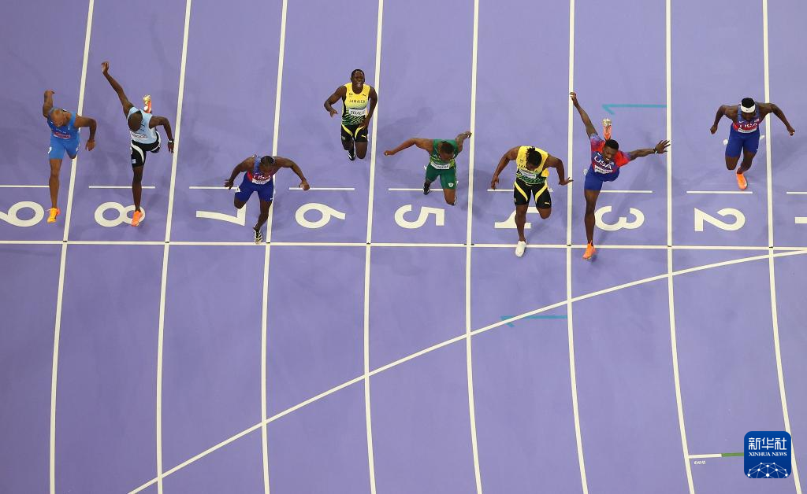
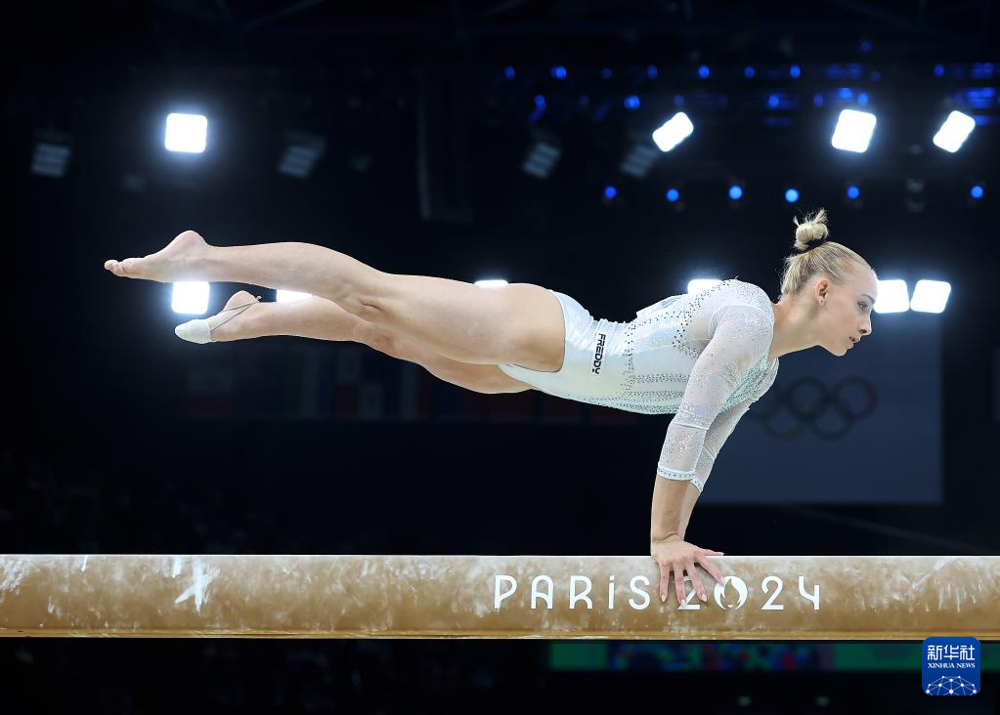

赛事中心
赛事筛选
赛事日程表
数据更新时间: 2024-08-15 12:00| 日期 | 时间 | 项目 | 场馆 | 对阵双方 | 比赛状态 | 直播链接 |
|---|
热门赛事详情
男子100米决赛
已结束 弗雷德·科尔利 (美国)
弗雷德·科尔利 (美国)
金牌
 塞维尔 (牙买加)
塞维尔 (牙买加)
银牌
 雅各布斯 (意大利)
雅各布斯 (意大利)
铜牌
赛事回顾
在巴黎奥运会男子100米决赛中，美国选手弗雷德·科尔利以9秒79的成绩夺冠，牙买加选手塞维尔以9秒84获得银牌，卫冕冠军意大利选手雅各布斯以9秒89获得铜牌。

女子体操团体决赛
进行中
美国队
174.230
 中国队
中国队
173.400
 英国队
英国队
170.596
最新战况
女子体操团体决赛正在进行中,美国队目前暂列第一,中国队以微弱差距紧随其后。平衡木项目刚刚结束,中国选手唐茜靖表现出色获得14.566的高分。

新闻简讯
15
8月
中国乒乓球队包揽男女单打金银牌
在巴黎奥运会乒乓球单打比赛中，中国选手展现了绝对统治力，包揽了男女单打的金银牌。樊振东和王楚钦会师男单决赛，孙颖莎和王曼昱会师女单决赛。
14
8月
法国游泳选手打破世界纪录
在男子200米自由泳决赛中,法国本土选手莱昂·马尔尚以1分43秒21的成绩打破世界纪录并夺冠,为法国队赢得重要金牌。
13
8月
巴黎奥运会收视率创历史新高
据国际奥委会统计,巴黎奥运会开幕式全球收视人数超过30亿,创下奥运会历史新高，塞纳河上的开幕式受到广泛赞誉。